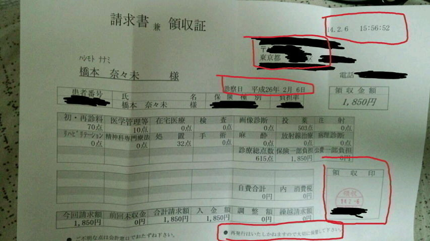

一部で昨日私がUSJにいた
ということになっているらしいですが
新曲の制作、そして22日に全曲ライブを控え
毎日リハーサルや新曲に向けて他の仕事をしている鬼のスケジュールの中で
大阪に行ける訳がありません。笑
昨日だってランチして花粉症でつらいからかかりつけの病院行ってリハーサル行ってみんなと夜まで一緒でしたよ

昨日の病院の領収書。
日時的にも、これで納得して頂けるんじゃないでしょうか。
問題の写真も拝見させて頂きましたが
髪色も違うし、
右側の前髪の幅、あんなに広くないです。
最近専ら右側の髪は耳にかけてるのを見てもらえば分かると思うけど
あぁ、ショックです
盗撮された方に本当に申し訳ないです。
無関係なのにネットに挙げられ巻き込んでしまう形になってしまって、お二方、申し訳ありません。
おもしろ半分で騒いでる方達だけなら静観しようと思いましたが
思ったより皆さんが信じてしまっていた様子だったので、弁解させて頂きます。
そして全く無関係の一般の方を巻き込むのはとても心苦しいです。
こういう問題に自ら言及するのも見苦しいと承知した上で、
今回は一般の方がネットで晒されているということでブログに書かせて頂きました。
今後このような騒ぎも、乃木坂が色んなところに出て行って顔が知られていくほど起こる可能性、頻度は高くなるでしょう。
ですが、一般の方を巻き込む
ましてや電車内の盗撮
少し行き過ぎたものを感じます。
ファンの皆さんには、今後このようなことが起こらないよう、協力をお願いしたいです。
私ももう、このような記事はあげません。
でも、こういうのを大学生にTwitterで書かれるようになってきたってことは
少しは学生世代にも乃木坂の名前が売れてきたってことかな？？
うん、何事も前向きに捉えなければね(｀_´)ゞ
お疲れさまでした。